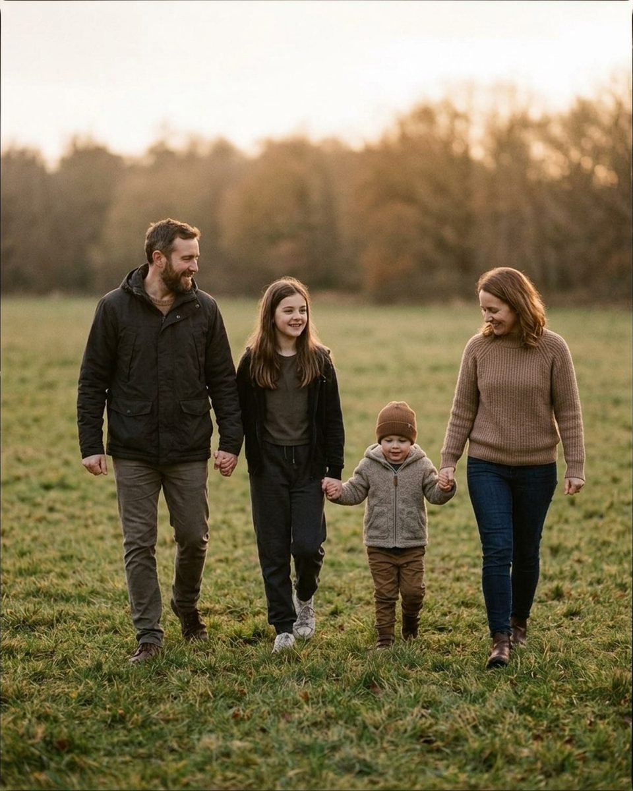

What to say in the first five minutes of any session
Nineteen prompts from the Prompted catalog for the opening minutes of a shoot, in the order the five minutes actually run, with the pose each one belongs to.
The first five minutes of a session are not warm-up. They are the part that decides whether the next fifty-five are work or not. Your clients arrive having rehearsed nothing except the worry that they are bad at this, and they are watching you to find out how much trouble they are in. Whatever you say in those five minutes answers three questions they have not asked out loud: am I allowed to be bad at this, what do I do with my hands, and when does it stop. Answer all three early and the rest of the session is just moving people around in good light. Leave them unanswered and you spend the hour photographing people bracing. The lines below are quoted word for word from the Prompted catalog, with the pose each belongs to, and they are sorted the way the five minutes actually run rather than by subject type: one script that works whether the people in front of you are a couple, a senior, a family of six or a mother at eight months. Most of them are the catalog's nervous-client tone, which is the tone built for exactly this stretch. Most reference frames here are AI-generated posing references rather than real session work; the one from an in-home session is a photograph, and real galleries are being added through the contributor program as photographers submit their own.
Minute one: say something before you lift the camera
The camera coming up is the starting gun. Before it does, people are still just standing in a field talking to you, and anything you say lands as conversation instead of direction. So spend the first minute with the camera at your hip. What you are doing is naming the awkwardness before they have to pretend it is not there, because the pretending is what reads as stiffness in the frame. Say the discomfort is normal, say it is expected, say it has a schedule. A client who believes awkwardness is part of the process stops treating it as evidence that the session is going badly.
Every senior feels weird for the first ten minutes. You're right on schedule.
Nervous clientFrom the pose “Rail lean”
The best opener in the catalog, and it works far past seniors — swap the noun for whoever is in front of you. It makes the discomfort scheduled rather than personal, which is the single most useful thing you can hand someone in the first sixty seconds.
Pretend it's Sunday morning and nobody has anywhere to be.
Nervous clientFrom the pose “Tree line lean”
For the family that arrived rushed, which is most of them: somebody was dressed in the car and somebody else is still annoyed about it. This resets the room's pace to something slower than the drive over, and you can say it while you are still deciding where to put them.
Just stand in the light for me. That's the whole job.
CalmFrom the pose “Hug from behind”
Use it when you have physically placed someone and they are visibly waiting for the next instruction. Telling them that standing is the entire job removes the suspicion that they are failing at something more complicated they were not told about.
Nobody sees these until you've approved them. Deal?
Nervous clientFrom the pose “Chin on hand”
Say this to anyone who has mentioned that they photograph badly, and say it as a question so they have to answer. Handing over the veto is usually what unclenches a jaw, and asking for a deal makes it an agreement between two people rather than a reassurance from the one holding the camera.
Minute two: answer the hands question
Everybody asks about their hands. They ask out loud, or they ask by holding them an inch away from their own thighs as though the arms belong to somebody else. It is the first concrete thing a person notices they do not know how to do, and it stands in for the whole larger fear. The mistake is to answer it with a placement, because then the hands become a thing they are getting right or wrong and they will check on them for the rest of the hour. Answer it by taking the grade away instead.
Shake out your hands. Now forget I said anything about hands.
Nervous clientFrom the pose “Jacket over shoulder”
The shake is a physical reset and the second half closes the subject, which is the part that matters. Give it to anyone standing with straight arms. The joke is doing real work: it means the hands have been dealt with and nobody has to raise them again.
Nobody's judging your hands. Wherever they land is right.
Nervous clientFrom the pose “Hug from behind”
For a client who keeps adjusting, or who asks you directly where the hands go. Wherever they land is right is a wider permission than it sounds, and it is true: almost nothing about a hand position survives a real expression anyway.
You can't do this wrong. Your hands already know where to go.
Nervous clientFrom the pose “Nursery window”
Written for a maternity session, where the question comes up most, and good for anyone holding something — a bump, a baby, a bouquet, a dog. You can't do this wrong is the sentence; your hands already know is the reason it is believable.
You don't need to fix his collar. I promise it reads as charming.
Nervous clientFrom the pose “Couch pile”
The parent version of the hands question, aimed at a mother who is reaching for a collar instead of her own hands. It stops the fussing without telling her she is wrong about the collar, which she is not. It just does not matter as much as her face does.
Minute three: make the first frame a throwaway
The third minute is where you take your first real frames, and the most useful thing you can do is tell the truth about them: they are tests. Nobody performs well on a shot they believe is the shot. Say you are checking the light, or testing the background, or working out an exposure, and the stakes drop far enough that a real face appears. You will find, routinely, that the throwaway frames are not throwaway. A person who has been told nothing counts yet gives you the expression they actually have, which is the one the client's mother wanted.
You don't have to smile yet. We're just testing the light on your jacket.
Nervous clientFrom the pose “Skateboard underarm”
The permission not to smile yet is the whole line. A held smile goes dead in about four seconds and everyone can feel it happening. Blame the light, shoot four or five frames while nobody is performing, and keep them.
We can start with your 'whatever' face. That one's usually the keeper.
Nervous clientFrom the pose “Hands in pockets”
Best for a teenager, but try it on an adult who told you they hate photos. Asking for the unimpressed face is the only request in the session they are certain they can fulfil, and it almost always collapses into a real laugh two frames later.
Take one deep breath and let your face do nothing at all.
CalmFrom the pose “Rail lean”
Use it right after the first few frames, once they have seen that nothing bad happened. Let your face do nothing at all is an instruction people can follow exactly, unlike relax, and the breath drops the shoulders without you having to mention shoulders.
If it feels awkward, laugh about it. That's the shot.
Nervous clientFrom the pose “Whispered secret”
Keep this one in reserve for the moment something goes wrong in minute three — a stumble, a mistimed pose, somebody laughing at the wrong time. Naming it as the shot rather than the problem converts the next ten seconds instead of losing them.
Minute four: the person who did not want to come
Almost every session contains one. The dad who was told about this on Tuesday, the teenager whose mother booked it, the new mother who has not slept and does not want to be photographed at all. In the first five minutes they are the biggest risk in the frame, because their discomfort spreads faster than anyone's ease does. The move is the same for all of them: give them something to look at that is not you. Point their attention at a person they already love and the self-consciousness has nowhere to stand.
You don't need to look at me at all—just focus entirely on making her laugh.
Nervous clientFrom the pose “Between shoulders giggle”
Say it to the parent who is checking the lens between every frame. It replaces the job they think they have, which is looking good, with one they are already expert at, and the laugh you get is the baby's, which is the better subject anyway.
You don't have to look up at me at all. Just keep your eyes right on her.
Nervous clientFrom the pose “Lap cradle overhead”
The seated version, and gentler, for a mother who is tired and sore and would rather not be looked at. Releasing her from the camera entirely in the first few minutes buys you the rest of the session; she will look up on her own later.
There's no pose. Just stand with your baby for a minute — you're already holding them.
Nervous clientFrom the pose “Dress flow field”
There's no pose is a strange thing to say in a posing app and it is the right thing to say here. For any client who arrived braced for a performance, this names the minimum and then points out she is already doing it.
Forget I'm here for a second. Tell them about the first time you met.
Nervous clientFrom the pose “Piggyback”
The reliable one for a reluctant partner. It is a question with a real answer, so answering it takes actual attention, and attention spent on a memory is attention not spent on you. Step back further than feels natural and let the first thirty seconds go by unphotographed.
Minute five: tell them what the next hour looks like
Close the five minutes by saying how the session ends. Most of the tension left in the group at this point is not about posing; it is uncertainty about duration and about the one picture somebody came here for. Get the obligatory frame on the record early, out loud, as a trade. Once everyone knows the one for Grandma is handled, the rest of the hour stops being a negotiation and the children stop being a problem to be managed, which is usually when the pictures you actually want start.

We'll get one photo where everyone smiles at me for Grandma. Then we play. Deal?
Nervous clientFrom the pose “Walk away holding hands”
The most valuable sentence in the catalog for a family of more than four. It gets you the posed frame while the clothes are clean and the children are still cooperating, and it tells everyone the formal part has a short end.
Nobody has to look at the camera. Look at whoever you love most in this group.
Nervous clientFrom the pose “Group walk hold hands”
Use it immediately after the one for Grandma is in the bag. It reassigns every pair of eyes in the group at once, and because they are all looking at different people the frame stops looking like a row of volunteers.
The kids don't have to sit still. Chase them. I'll keep up.
Nervous clientFrom the pose “Nose boop line”
Aimed at the parent, not the child. Parents spend the opening minutes apologising for a toddler and watching you for signs of irritation; saying out loud that you will keep up ends the apologising, and a parent who is not managing the room photographs better too.
None of these nineteen lines is about posing. They are the five minutes you spend buying the right to pose someone, and they work in the same order whatever the session is. Once the stakes are down, the hands are settled and the obligatory frame is on the card, you are into the ordinary work of the hour, which is the subject of the rest of these guides: what to say when a couple goes stiff, how to get a seventeen-year-old to stop performing, what to do with the one adult who is counting the minutes. The opening five are the only ones you cannot get back.
The Fall Mini Session Shot List
About 25 poses grouped by family size, each with the words to say. A free PDF, sent once you confirm your address.
One email to confirm, one with the PDF. Unsubscribe any time. No selling, no sharing.
Every prompt in this guide is in the app, with the pose it belongs to.
Prompted is the posing app that is only a posing app: 250+ poses, each with word-for-word prompts in four tones, filtered to the light you're standing in. The sun tracker is free forever.
Get Prompted on the App Store